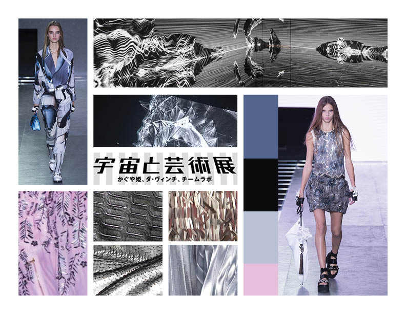
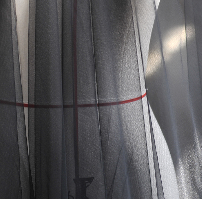
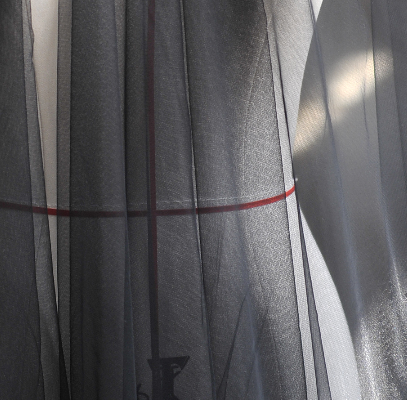
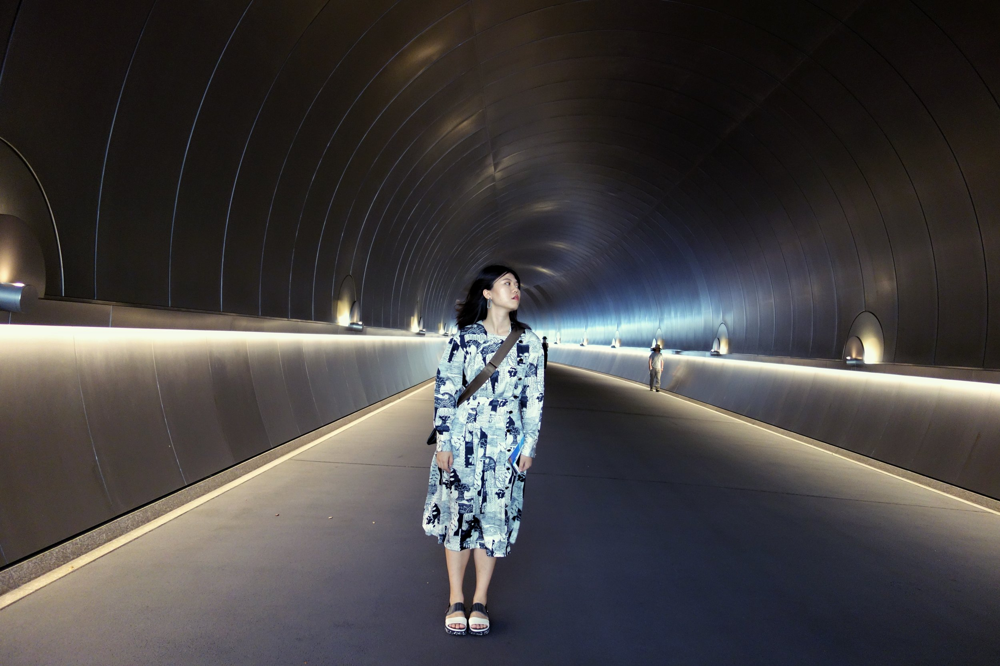

Final Line-Up
INERITA is a collection based on an imaginary future society in which people refuses to change. The specific looks are designed to function as uniforms for the inhabitants of this alternative future. Thus, they imply a sense of “fashion communism” and a core value of supreme efficiency. In reach look, a flow material is contained by a stiff fabric (patent leather or denim), to convey the oppression from the society.
Moodboard

INERITA takes inspiration from many different places.
First of all, it is inspired by the recent fascination of cosmic exploration as a topic in the high-fashion industry. Many famous lines have already came up with collections that explore this topic in creative ways. Second of all, inspirations are also doing in computational immersive environments, especially the large scale ones displays in modern art museums. Last but not least, it is also crucial to design with the set of materials that are available at hand. Thus fabric swatches that are accessible either through online ordering or local pick up are given high considerations.
Fabric Swatches
 

Dark blue denim
Sliver patterned streachy fabric
Black shiny patent leather
Translusent black chiffon
Think ash pink cutton fabric
Black micro suede
Thing dark blue material
Shiny silver tassel fabric
Look 1

I am an interaction designer, user researcher and artist currently based in Pittsburgh, PA. My works have been largely driven by a specific interest in understanding my users and I truly believe that they are, and should be parts of my work. I'm very experienced in working with dynamic, cross disciplinary teams and enjoyed every moment. At the same time, I'm self-motivated and like to work alone just as well.

I’m studying Communication Design and Human-Computer Interaction at Carnegie Mellon University. I use design to make emerging technologies more accessible to people, and to create meaningful experience for users through the UX design process. I love museums, fashion, ducks, and film photography.